Brasil
Es uno de los mayores productores agrícolas del mundo y descarta alrededor de 55 millones de toneladas de comida anuales
DATOS EN TIEMPO REAL
82%
Producción
9.2
%
Población con hambre
warning
Estable
Sin conflictos
7.1
%
Niños con retraso en crecimiento
"Este país derrocha mucha más comida que la que necesita para eliminar el déficit alimentario de parte de su población."